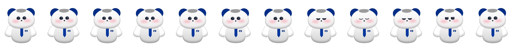
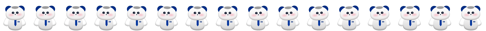
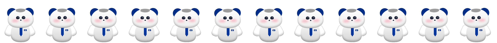

ACCS mascot sprites
Generated by scripts/mascot/build.mjs.
Lion · 280×275 cells
Animations
breathe · 16 frames · 10 fpsblink · 12 frames · 12 fpslook-around · 16 frames · 8 fpssway · 12 frames · 10 fpsdoze · 16 frames · 6 fpswave · 12 frames · 12 fps Emotions and poses
neutralhappylaughingsurprisedsadthinkingsleepywinkloveproudwave (pose)point (pose)cheer (pose)document (pose) Strips
breathe stripblink striplook-around stripsway stripdoze stripwave stripCub · 308×322 cells
Animations
breathe · 16 frames · 10 fpsblink · 12 frames · 12 fpslook-around · 16 frames · 8 fpssway · 12 frames · 10 fpsdoze · 16 frames · 6 fpswave · 12 frames · 12 fps Emotions and poses
neutralhappylaughingsurprisedsadthinkingsleepywinkloveproudwave (pose)point (pose)cheer (pose)document (pose) Strips
breathe strip
blink strip
look-around strip
sway stripdoze stripwave strip